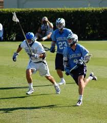

|
Click here for the Home Page.
Click here for the About Me Page.
|
| Media Surrounding Lacrosse |
|---|
MLL HighlightsThis video offers viewers a highlight
|
MLL Updates PodcastThis podcast gives in-depth information about lacrosse,
|
MLL Action ShotA simple photo, but it displays the non-stop action that you

|